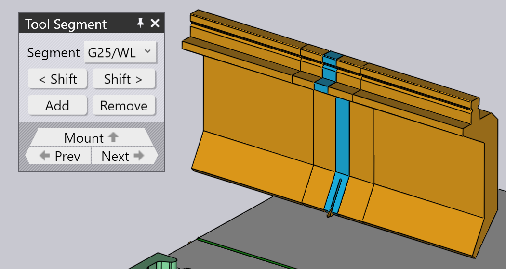
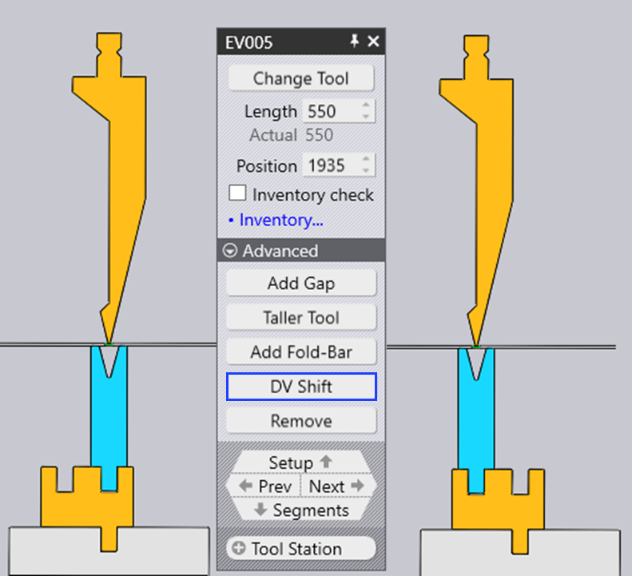

Úprava zostavy nástrojov
Po kliknutí na zostavu nástroja sa otvorí okno Bend Mount (Montáž nástroja), môže sa použiť na úpravu rôznych nastavení zostavy nástroja a na vykonanie niektorých operácií.
Okno zostavy nástroja

Na obrázku vedľa je zobrazené okno Bend Mount (Zostava nástroja). Presné nastavenia a dostupné operácie sa budú líšiť v závislosti od toho, či klikáte na zostavu horného, spodného nástroja alebo adaptéra. Niektoré nastavenia môžu alebo nemusia byť dostupné v závislosti od možností stroja.
-
Kliknutím na tlačidlo Change Tool (Zmeniť nástroj) je možné vymeniť nástroj použitý vo zvolenej zostave nástroja za iný nástroj. (V časti nižšie je uvedených viac informácií o výbere nástroja, ktorý sa používa na voľbu iného nástroja).
-
Zadanie Length (Dĺžka) sa používa na nastavenie dĺžky stanice nástroja. Ak tu zadáte novú hodnotu, TecZone Bend opäť zostaví stanicu nástrojov použitím vhodnej sady segmentov nástroja tak, aby sa čo najviac zhodovala s požadovanou dĺžkou. Použité segmenty je možné vizuálne skontrolovať pohľadom na okrajové čiary deliace segmenty, zobrazené v zostave nástrojov.
-
Zadanie Position (Pozícia) sa používa na nastavenie pozície ľavého okraja zostavy, vzhľadom k stolu stroja alebo tlačného barana. Túto polohu je možné nastaviť aj potiahnutím zostavy doľava alebo doprava. (Pozri nižšie časť o potiahnutí zostavy).
-
Pole Ear (Roh) (zobrazuje sa len pre zostavy horných nástrojov) je možné použiť, ak chceme aby TecZone Bend použil ľavý a/alebo pravý horný rohovýear[1] nástroj v zostave nástrojov).
-
Flip Tool (Otočiť nástroj) sa používa na otočenie nástroja (čelom dozadu). Zobrazí sa, ak upravujete zostavu, v ktorej je použitý asymetrický nástroj (napríklad zahnutý nástroj tvaru husieho krku). Operácia otočenia je dostatočne inteligentná na to, aby zistila, či je potrebné otočiť ďalšie držiaky a nástroje, aby sa zachovala ich konzistencia. Napríklad, na obrázku nižšie a pri otočení horného nástroja OW_Z4 (používaného na ohyby tvaru Z) otočí aj spodný nástroj, držiak a dokonca aj dielec, aby nedošlo k porušeniu procesu:

-
Add Adapter (Pridať adaptér) sa používa na pridanie predĺženia kvôli zväčšeniu výšky horného alebo spodného nástroja. Po pridaní adaptéra sa adaptér zvolí a otvorí sa okno adaptéra (to vám umožní zmeniť aktuálne používaný adaptér alebo ho odstrániť).

-
Add Gap (Pridať medzeru) sa používa na pridanie medzery do zostavy nástrojov, aby sa do nej pri ohýbaní bez kolízie zasunul vopred vytvorený ohyb (detaily sú uvedené v časti nižšie, o pridaní medzery).
-
Taller tool (Vyšší nástroj) sa používa na nahradenie zvolených nástrojov inými vyššími nástrojmi rovnakého typu.
-
Kliknutím na Remove (Odstrániť) odstránite zostavu nástrojov. V navigátore sa zobrazí sa chyba missing punch (chýbajúci horný nástroj) alebo missing die (chýbajúci spodný nástroj) pre ohyby, ktoré používajú túto stanicu. Odstráni sa to pridaním novej zostavy použitím povelu Add (Pridať) v paneli nástrojov naľavo.
-
Pole ACB Sensor sa používa na prepínanie medzi rôznymi pármi meracích platničiek ACB, ktoré je možné použiť na tento dielec. Voľba je závislá od hrúbky plechu a použitého horného nástroja.
-
Ak je označené zaškrtávacie políčko Inventory check (Kontrola skladu), skontroluje sa, či sa potrebný počet použitých segmentov nástroja nachádzajú na sklade (možné upraviť kliknutím na odkaz Inventor (Sklad)). Ak sú použité segmenty nástroja, ktoré nie sú v závode skladom, zobrazí sa na ňom špeciálny symbol trojlístka, ako je to zobrazené na obrázku nižšie na segmente horného nástroja dĺžky 40 mm a 45 mm:

Keď upravíte zostavu nástroja pomocou ktoréhokoľvek z týchto nastavení a operácií, TecZone Bend hneď overí stav všetkých operácií ohýbania a vykoná rôzne kontroly, ako je kolízia, použiteľnosť nástroja atď. Stav navigátora ohýbania sa aktualizuje okamžite a v reálnom čase, čo veľmi uľahčuje experimentovanie s rôznymi nastaveniami s okamžitou a presnou spätnou väzbou.
Okno výmeny nástroja
Po kliknutí na tlačidlo Change Tool (Zmena nástroja), otvorí sa okno Replace Tool (Vymeniť nástroj):

V tomto okne sa zobrazia všetky možné náhradné nástroje.
-
Pomocou filtra na ľavej strane je možné zúžiť výber – napríklad vybrať zobrazenie iba zahnutých nástrojov (s husím krkom), aby bol výber jednoduchší.
-
V poli Sort (Triediť) hore je možné triediť nástroje podľa názvu, výšky, rádiusu alebo iných kritérií triedenia (kritériá triedenia závisí od toho, či sa mení horný, spodný nástroj alebo adaptér).
-
Do poľa Search (Hľadať) je možné zadať názov nástroja (alebo skrátený názov) a rýchlo tak zúžiť zoznam. Pritom postačuje zadať čiastočný názov nástroja - napr. zadaniu OW200 budú zodpovedať nástroje OW200, OW200/S a OW200/K.
-
Posuvným ovládačom Scale (Mierka) sa zmení veľkosť obrázkov nástrojov. Aktuálne používaný nástroj je vyplnený modrou farbou a má hrubý obrys. Svetlomodré šrafovanie označuje ostatné nástroje, ktoré sa na tomto dielci používajú.
-
Vypnutím zaškrtávacieho políčka Filter sa zobrazia všetky nástroje (bez ohľadu na to, či sú použiteľné, alebo nie). V tomto zobrazení sú nástroje, ktoré nie sú vhodné, zobrazené sivou farbou. Presunutím myši nad jeden z týchto nástrojov sa zobrazí, prečo ho nie je možné zvoliť:

Pri pohybe myšou po obrázkoch nástrojov TecZone Bend hneď prepočíta zostavu zvoleného nástroja, pri použití novo zvoleného nástroja. V reálnom čase je možné vidieť, či nástroj, ktorý zvažujete, spôsobí problémy formou kolízie alebo nie (príslušné ohyby v navigátore ohybov sa okamžite rozsvietia na červeno, ak v nich dôjde ku kolízii). Tento náhľad v reálnom čase výrazne uľahčuje experimentovanie s rôznymi možnosťami nástrojov, kým sa nenájde ten správny.
Po kliknutí na jeden z nástrojov sa zrealizuje výber a nový nástroj sa použije na dielec. Ak namiesto toho stlačíte Esc, vykonané voľby v náhľade sa vrátia späť a pôvodný nástroj ostane nezmenený.
Navigácia a výber
V okne zostavy nástroja sú zobrazené rôzne tlačidlá okien navigácie a výberu.
-
Pomocou navigačného tlačidla Setup (Zostava nástrojov) je možný presun nahor kvôli úpravám celej zostavy nástrojov. Viac informácií je uvedených na stránke úprav zostáv nástrojov.
-
Pomocou tlačidiel Prev (Predošlý) a Next (Ďalší) je možné prepínať sa medzi úpravami rôznych zostáv nástrojov v tejto zostave.
-
Pomocou navigačného tlačidla Segments (Segmenty) je možné prejsť o úroveň nižšie a upraviť jednotlivé segmenty tvoriace túto zostavu. Viac informácií k tejto téme je uvedených v časti nižšie o úprave segmentov.
-
V poli Tool Station (Stanica nástrojov) je možné zvoliť všetky zostavy nástrojov tvoriacich túto stanicu. Týmto sa zvolia všetky horné, spodné nástroje a držiaky, ktoré sú zarovnané s vybranou zostavou nástrojov, všetky je možné upravovať alebo spoločne presúvať.
-
V poli Same Tool (Ten istý nástroj) je možné zvoliť inú zostavu nástrojov, ktorá používa ten istý nástroj. Často sa to používa pred spustením procesu výmeny nástroja; výber všetkých staníc pomocou zadaného nástroja rozšíri dostupný výber nástrojov, ktoré je možné vymeniť.[2]
Úprava viacerých zostáv

Po zvolení viacerých zostáv stlačením Shift+klik na všetky z nich, je možné ich upravovať spolu. Pre úpravy sú k dispozícii iba nastavenia a operácie, ktoré sú spoločné pre všetky zostavy.
Pre úpravy sa zobrazia iba polia Length (Dĺžka) alebo Position (Pozícia), ktoré sú spoločné pre pre všetky zostavy.
Ak máte viacero staníc, pred vykonaním Zmeny nástroja má zmysel zvoliť všetky horné alebo spodné nástroje. V takom prípade je výber dostupných nástrojov navrhnutých na výmenu rozsiahlejší (pretože neexistuje nebezpečenstvo kolízie horných a spodných nástrojov s rôznou výškou).
Presunutie zostavy ohraňovacích nástrojov

Parameter Position (Pozícia) je možné použiť na nastavenie presnej pozície zostavy nástrojov.
Niekedy je jednoduchšie jednoducho presunúť zostavu nástrojov na požadované miesto. Ako na to:
-
Kliknutím na zostavu nástrojov ju zvolíte (viacero zostáv zvolíte stlačením Shift+klik)
-
Kliknite na zvolenú zostavu a začnite posúvať doľava/doprava aby ste ju presunuli.Ako je znázornené na obrázku vyššie, keď presuniete myš nad vybranú zostavu, zobrazí sa šípka, ktorá naznačuje, že zvolenú zostavu je možné presunúť. Pri presúvaní zostavy umožňujú indikátory prichytenia jednoducho zarovnať zostavu s inými existujúcimi zostavami.
Ak chytíte zostavu blízko jeho ľavého okraja, bude sa prichytávať k ľavým okrajom všetkých zostáv. Ak chytíte držiak za stred, pri prichytenie sa použije stredová čiara zostavy, atď.
Rozšírené operácie
Tu je niekoľko ďalších procesov, ktoré sú možné v okne úprav zostavy nástrojov.
Úprava segmentov zostavy nástroja
Kliknutím na navigačné tlačidlo Segments (Segmenty) počas úprav zostavy ohraňovacích nástrojov sa otvorí okno Tool Segment (Segment nástroja), viď obrázok. 
-
V poli Segment je možné zmeniť zvolený segment nástroja za dlhší alebo kratší segment, alebo za iný typ segmentu.
-
Tlačidlá < Shift a Shift > sa používajú na posunutie zvoleného segmentu v zostave doľava alebo doprava v rámci zostavy. Tým sa nezmení celková dĺžka zostavy, túto funkciu je vhodné použiť napríklad na posunutie senzorového nástroja doľava alebo doprava, aby sa nenachádzali nad otvormi.
-
Tlačidlá Add (Pridať) a Remove (Odstrániť) sa používajú na pridanie nového segmentu do zostavy, alebo na odstránenie zvoleného segmentu.
-
Navigačné tlačidlá Prev (Predošlý) a Next (Ďalší) sa používajú na prepínanie medzi úpravami rôznych segmentov v zostave nástrojov. Ako je znázornené na obrázku vyššie, upravovaný segment nástroja je zvýraznený modrou farbou.
-
Pomocou navigačného tlačidla Mount (Zostava) je možné použiť na posun o jednu úroveň vyššie a na úpravu celej zostavy nástrojov, nie jednotlivých segmentov.
Pridanie medzery do zostavy
Niekedy je potrebné pridať do zostavy nástrojov úzku medzeru, zvyčajne preto, aby ním mohol prejsť predošlý ohyb bez kolízie. Kliknite pritom na tlačidlo Add Gap (Pridať medzeru) (ktoré sa objaví, ak je zostava nástroja dostatočne dlhá). V okne sa otvorí malá sekcia so sadou prepojených vstupov na nastavenie ľavého okraja, pravého okraja a skutočnej medzery. Keďže súčet týchto troch hodnôt musí zodpovedať dĺžke zostavy nástroja, úpravou dvoch z nich sa automaticky nastaví tretia.
Na obrázku nižšie je zobrazený tento proces. Máme vnútorný ohyb, ktorý je v kolízii s horným nástrojom. Upravujeme ľavý/pravý okraj, kým sa navrhovaná medzera nezarovná s miestom, kde ohyb pretína horný nástroj (navrhovanú medzeru je možné vidieť ako dve oranžové čiary nakreslené na zostave nástrojov).

Kliknutím na tlačidlo Ok v tomto okne sa vytvorí medzera. Následne je možné vidieť, že chyba kolízie je už vyriešená:

| Pri úprave stanice, ktorá používa držiak horného nástroja sa TecZone Bend opýta, či sa má medzera nastaviť iba pre horný nástroj alebo aj pre jeho držiak. |
Adaptér pre dva spodné nástroje
Na montáž dvoch spodných nástrojov za sebou je možné použiť adaptér (DV adaptér). Ak chcete ručne pridať adaptér spodného nástroja, stlačte tlačidlo Add Adapter (Pridať adaptér), potom stlačte tlačidlo Change Tool (Zmeniť nástroj), aby sa adaptér zmenil na DV adaptér. Teraz je možné pridať druhý spodný nástroj do druhej drážky DV adaptéra pomocou príkazu Add (Pridať) v paneli nástrojov a zvolením zostavy nástroja.
Keď máte nástroj namontovaný v jednej drážke DV adaptéra, je možné ho presunúť do druhej drážky kliknutím na zobrazené tlačidlo DV Shift (Posunúť DV):
